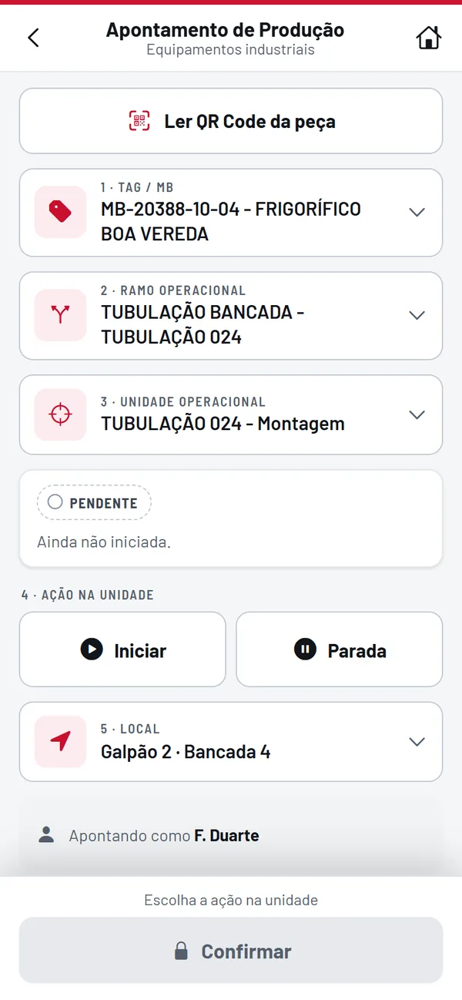
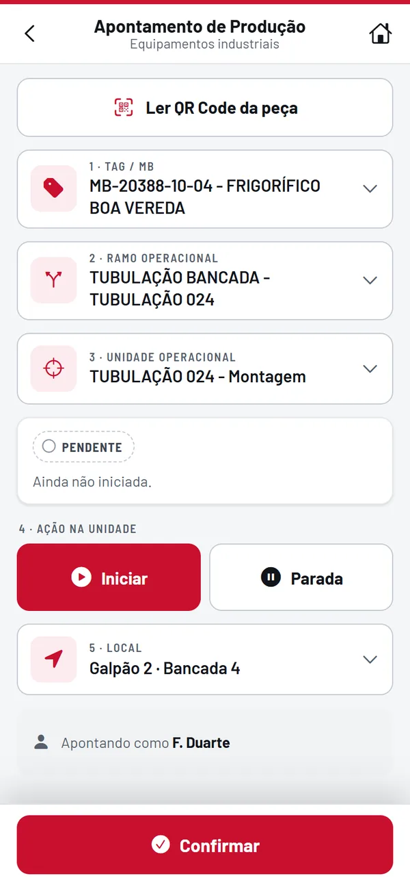
Apontamento por QR Code
Iniciar, Finalizar ou Parada. Hora e responsável ficam gravados, e a unidade espera a etapa anterior terminar.
O operador aponta cada etapa pelo QR Code e o TrackTube compara com o cronograma.
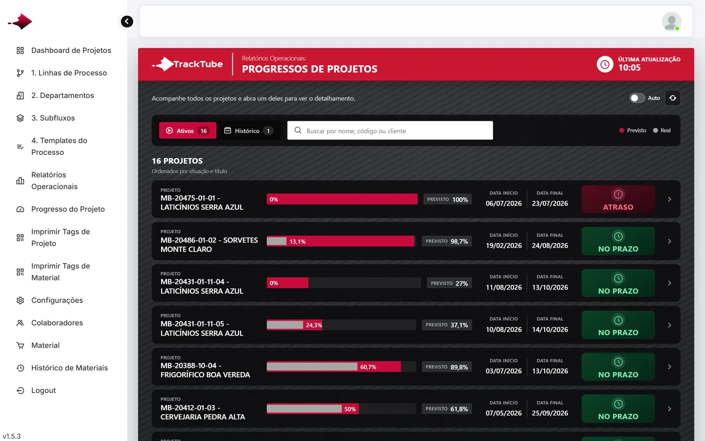
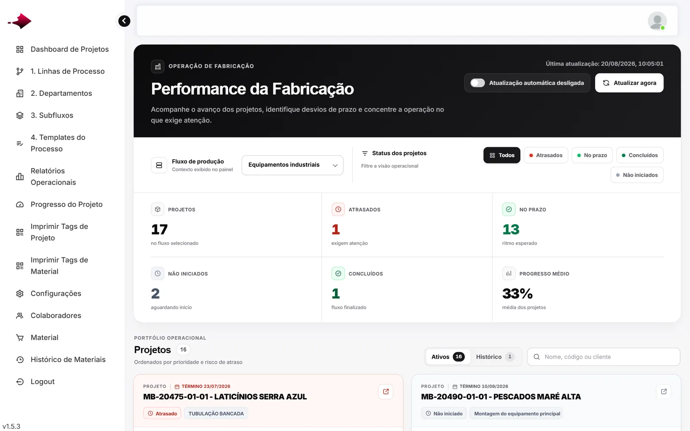
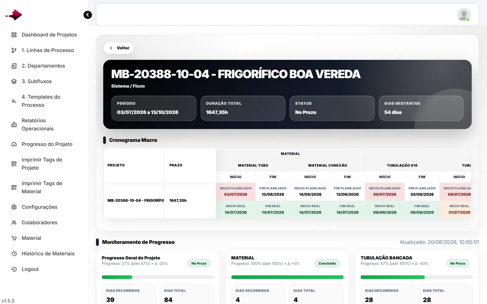
Importe o cronograma do MS Project e acompanhe cada departamento contra o planejado. Passou da data final sem terminar, aparece como Atraso.
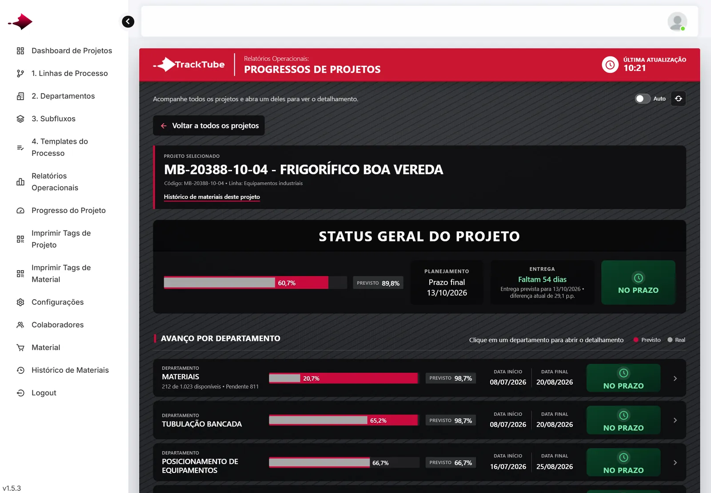
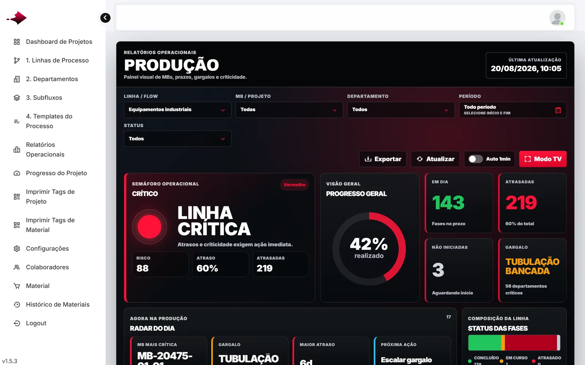
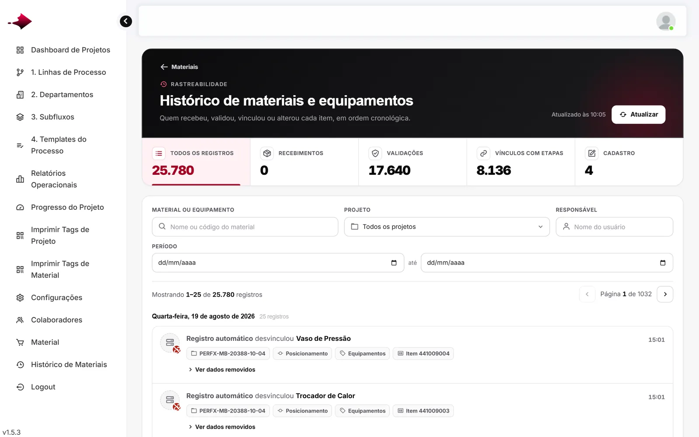
Real contra previsto, data final e status de cada departamento do projeto.
Semáforo da linha, gargalo e ações prioritárias, atualizando a cada minuto.
Quem recebeu, validou ou vinculou cada item, em ordem cronológica.
O app roda no navegador do celular, usa a câmera para ler a tag e mostra para cada pessoa só as fases que ela pode executar.


Iniciar, Finalizar ou Parada. Hora e responsável ficam gravados, e a unidade espera a etapa anterior terminar.
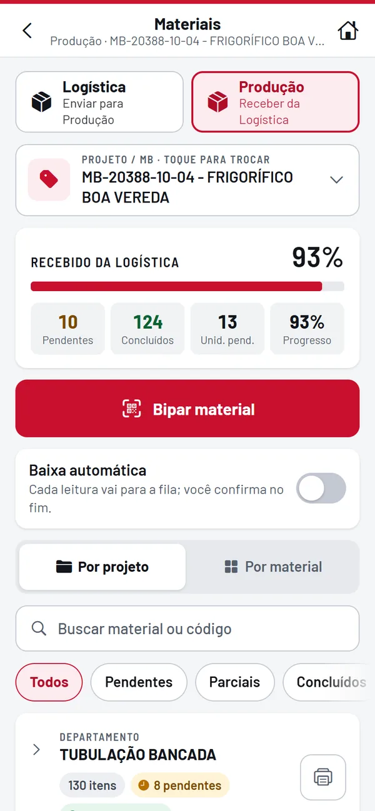
A logística envia, a produção recebe. Cada bipagem entra na fila e é confirmada no fim.
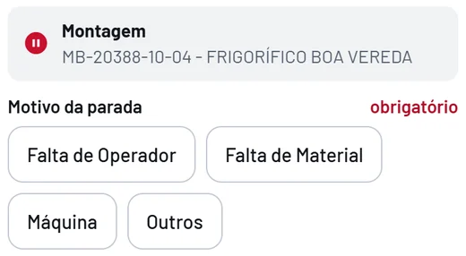
Os responsáveis pela fase recebem push e e-mail na hora, e a unidade fica bloqueada até alguém encerrar ou liberar.
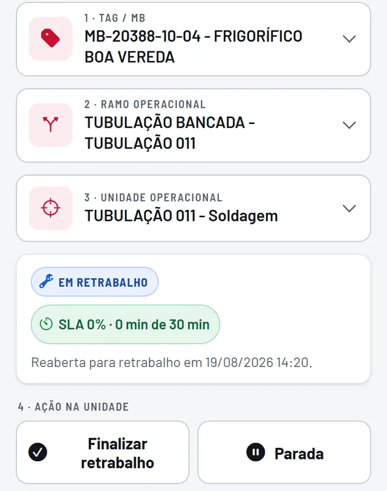
Reabra a unidade e o TrackTube separa a execução original de cada ciclo, com início, fim e duração.
O cronograma do MS Project e a lista de materiais em Excel são o ponto de partida.
Exporte o MS Project para Excel e importe. Departamentos, subfluxos, fases e datas viram o template da linha.
Task Name, Duração, Início e TérminoGere as etiquetas com QR de cada projeto e de cada material, no tamanho da sua etiqueta ou em folha A4.
Modelo 80 × 25 mm já vem prontoOs operadores leem a tag e apontam. O painel mostra o previsto x real enquanto a fábrica trabalha.
Sem instalar app de lojaFicou alguma dúvida sobre o seu processo? Mande no WhatsApp e a gente responde.
Não. O TrackTube roda no navegador do celular e usa a câmera para ler o QR Code. Dá para instalar na tela inicial do Android e do iPhone.
Sim, se ele está no MS Project. Exporte para Excel e importe: o TrackTube lê nome da tarefa, recuo, duração, início e término. A lista de materiais também entra por planilha.
Apontar é ler o QR da tag, tocar na ação e confirmar. Cada pessoa vê só as fases que tem permissão para executar, então a tela não fica cheia de opção que ela não usa.
Não. Cada empresa tem a própria instalação e o próprio banco de dados, num endereço só dela.
Hoje o cronograma e a lista de materiais entram por planilha Excel. Se você precisa de integração direta, conte na demonstração qual é o seu sistema.
Serve para quem fabrica sob encomenda, com projetos que passam por vários departamentos e têm data de entrega. Linhas, departamentos, subfluxos e fases são cadastrados do seu jeito, então o sistema segue o processo da sua fábrica.
Depende do tamanho da operação. Na demonstração a gente entende o seu processo e depois manda a proposta.
Na demonstração você vê o apontamento, os materiais e o previsto x real funcionando.
Ou chame no (12) 98162-2579.